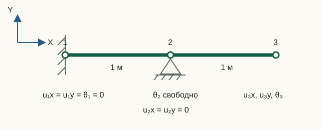

Собственные частоты и формы
Свободные колебания линейной системы без демпфирования определяются жёсткостью, массой и опорами. Модальный расчёт не использует заданные узловые нагрузки: он ищет движения, которые система способна поддерживать после начального возмущения.
Обобщённая задача на собственные значения
Для свободного движения без внешней силы:
M ü(t) + K u(t) = 0
Подстановка гармонической формы u(t) = φ sin(ωt) даёт:
K φ = λ M φ, λ = ω2
Собственная круговая частота равна ω = √λ, а частота в герцах:
f = ω/(2π)
В solveModal пары вычисляются функцией eig(Kff, Mff), затем сортируются по возрастанию λ.
Почему задача решается только на свободных СС
Как и в статике, сначала строятся fixedDOFs и freeDOFs. Собственная задача формируется для редуцированных матриц:
Kff φf = λ Mff φf
Если оставить закреплённые компоненты в полной задаче искусственным изменением строк, спектр будет зависеть от выбранного численного приёма наложения опор. Редукция сохраняет физические матрицы свободной подсистемы.
validateReducedSystem проверяет положительную определённость Kff и Mff. Механизм или безмассовая свободная СС останавливают расчёт до вызова eig.
Возврат к полной форме
Каждый редуцированный собственный вектор расширяется до всех СС модели:
modeShapes = zeros(numberOfDOFs, numberOfModes);
modeShapes(freeDOFs, :) = reducedModeShapes;Поэтому строки закреплённых СС равны точно нулю, а номер строки снова совпадает с глобальным номером СС. Это важно для последующей визуализации и сравнения форм в узлах.
Масштаб и знак формы
Если φ — собственный вектор, то cφ при любом ненулевом c описывает ту же форму. Абсолютная амплитуда и знак результата eig не являются физическим перемещением.
Два полезных способа нормирования:
- по массе: выбрать масштаб так, чтобы φTMφ = 1;
- для изображения: разделить компоненты на max|φi| и при необходимости зафиксировать знак самой большой компоненты.
Разные собственные формы симметричной системы ортогональны по массе и жёсткости:
φiTMφj = 0, φiTKφj = 0, i ≠ j
Анимация формы в постпроцессоре
Модель и модальный результат можно сохранить в JSON и открыть в автономном постпроцессоре MKE-F без локального сервера и подключения к интернету.
1. Выполните расчёт и экспорт
Откройте терминал в корневом каталоге проекта, запустите GNU Octave и выполните:
addpath(pwd);
setup;
problem = StructFEProblem(fullfile( ...
'examples', 'cases', 'CaseBeam.txt'));
model = problem.GetAnalysisModel();
result = problem.RunModal();
exportPostprocessorData(model, result, ...
fullfile('output', 'modal-frame.json'), ...
struct('title', 'Формы колебаний', ...
'lengthUnit', 'm', 'prettyPrint', true));Из корня репозитория выполните docker compose up --build (либо docker-compose up --build) и откройте препроцессор. Загрузите через Open TXT файл examples/cases/CasePreprocessorModal.txt и нажмите Run analysis. Рассчитанные формы автоматически откроются в постпроцессоре, где их можно анимировать и скачать как JSON.
После выполнения файл modal-frame.json появится в каталоге output. В терминале также можно проверить найденные частоты командой result.frequenciesHz.
2. Откройте результат
- Откройте
postprocessor/index.htmlв Chrome, Edge или Firefox. - Нажмите Open JSON и выберите созданный файл
output/modal-frame.json. Его также можно перетащить в пунктирную область окна. Готовый пример находится вexamples/results/modal-frame.json. - В списке Mode выберите форму. Рядом будут показаны её частота f в Гц и круговая частота ω в рад/с.
- Нажмите Play, чтобы запустить анимацию. Кнопки −1 и +1 переходят к соседним формам, Visualization speed меняет скорость показа.
- Перемещайте Phase factor от −1 до +1 для ручного просмотра отрицательного пика, недеформированной геометрии и положительного пика. Поле Display multiplier изменяет только видимый масштаб формы.
- Щёлкните узел или элемент: в панели Selection появятся нормированные компоненты выбранной формы и их значения в текущей фазе.
- Нажмите Export SVG или Export PNG, чтобы сохранить именно текущий кадр вместе с номером формы, частотой, фазой и масштабом.
Просмотрщик согласует произвольный знак каждой формы и нормирует её только для изображения. Множитель изображения изменяет видимую амплитуду, но не численные собственные частоты.
Двухсекундный цикл и переключатель скорости выбраны для удобства просмотра и не воспроизводят частоту f. Нормированные компоненты формы имеют произвольную амплитуду, поэтому их нельзя читать как перемещения в метрах. Истинные f и ω всегда показаны отдельно.
Экспорт SVG или PNG фиксирует текущую видимую фазу. Под изображением записываются номер формы, f, ω, фазовый множитель и масштабы, поэтому сохранённый кадр остаётся однозначным вне приложения.
Невязка формы
Частота сама по себе не проверяет соответствующий вектор. Для каждой пары вычисляют:
ri = Kffφi − λiMffφi
Удобна относительная норма, делённая на характерный размер двух слагаемых. Она не зависит от произвольного масштаба формы. Проверять полную строку закреплённой СС этой формулой нельзя: там возникают силы связей, аналогичные статическим реакциям.
Лабораторная 05. Частоты и формы колебаний балки с промежуточной опорой
Цель — связать свободные СС с компонентами собственных форм и проверить частоты через модальную жёсткость и массу.

Исходные данные и обозначения
Каждый пролёт имеет длину 1 м. A = 4·10⁻⁴ м², E = 200 ГПа, ρ = 7800 кг/м³, I = 5,33·10⁻⁸ м⁴. Порядок полных компонент: [u₁x; u₁y; θ₁; u₂x; u₂y; θ₂; u₃x; u₃y; θ₃]. В модальном расчёте внешняя сила из входного файла не используется.
До запуска: расчёт на бумаге
- По опорам на схеме выпишите закреплённые и свободные СС. Определите число искомых частот.
- Из Kφ = ω²Mφ выведите, как изменятся частоты при удвоении всей массы с прежней жёсткостью.
Запуск в Octave
Выполните из корня проекта. Готовая функция печатает результаты; для этой работы изменять её код не требуется.
addpath(pwd);
setup;
addpath(fullfile(pwd, "reference", "examples"));
r = example_05_modal_frame();Работа с результатами
- Сверьте
Fixed DOFsиFree DOFsсо своей нумерацией. ВFull modes scaled to max(abs(component)) = 1каждый столбец — отдельная форма; подпишите четыре незакреплённые строки физическими компонентами. - Для каждой частоты из
Natural frequencies [Hz]вычислите (2πf)². Сравните с соответствующим диагональным числомPhi' * Kff * Phi after mass normalization. - Проверьте, что
Phi' * Mff * Phi after mass normalizationблизка к единичной матрице. Объясните смысл единиц на диагонали и малых внедиагональных значений. - По строкам 6–9 напечатанных форм определите, какая форма соответствует продольному движению, а какие — изгибу. Для одной изгибной формы набросайте направление перемещения свободного конца и поворотов. Масштаб и общий знак формы произвольны; её числа не задают амплитуду вынужденного движения.
Закреплены СС 1–5; свободны [6 7 8 9] = [θ₂ u₃x u₃y θ₃], поэтому частот четыре: примерно 23,019; 173,115; 438,199; 1395,881 Гц. Первые три формы изгибные, четвёртая — продольная. Модальная масса — единичная, модальная жёсткость — диагональная с числами (2πf)². Напечатанная максимальная относительная невязка меньше 10⁻¹⁰. При удвоении массы все частоты делятся на √2.
Что включить в отчёт
Схему и список СС, таблицу «номер формы — f — (2πf)² — модальная жёсткость — характер движения», эскиз одной формы и прогноз влияния массы.
Исходный код главы
solveModal.m— редуцированная собственная задача и расширение форм;postprocessor/js/modal-view.js— нормирование, знак, масштаб и фаза изображения;validateReducedSystem.m— проверка жёсткости и массы;example_05_modal_frame.m— невязки, нормирование и ортогональность.
Теория
- Henri P. Gavin, Real Modes of Vibration of Building Structures, Duke University, редакция 16 сентября 2025 года: раздел 2, формулы (2)–(5).
MPC
При MPC решается Kr φr = ω²Mr φr, затем φ = Tφr. Число форм равно числу независимых СС. Связи поперечных перемещений промежуточных узлов устраняют паразитные механизмы измельчённого ферменного члена. Ненулевой rhs запрещён.
Подробное описание MPC · JSON v3 · CaseMPCFrame.txt · CaseMPCTruss.txt
Концевые освобождения Mz
Внутренние повороты сохраняют исходную согласованную массу. Условие освобождения в модальном анализе проверяется по K*phi − omega²*M*phi, а в переходном — M*a + K*u − F. Упругий момент K*u отдельно может быть ненулевым. Формы строятся по концевым поворотам, включая формы с неподвижными узлами.
JSON v4 · CaseReleaseStatic · CaseReleaseModal · CaseReleaseTransient